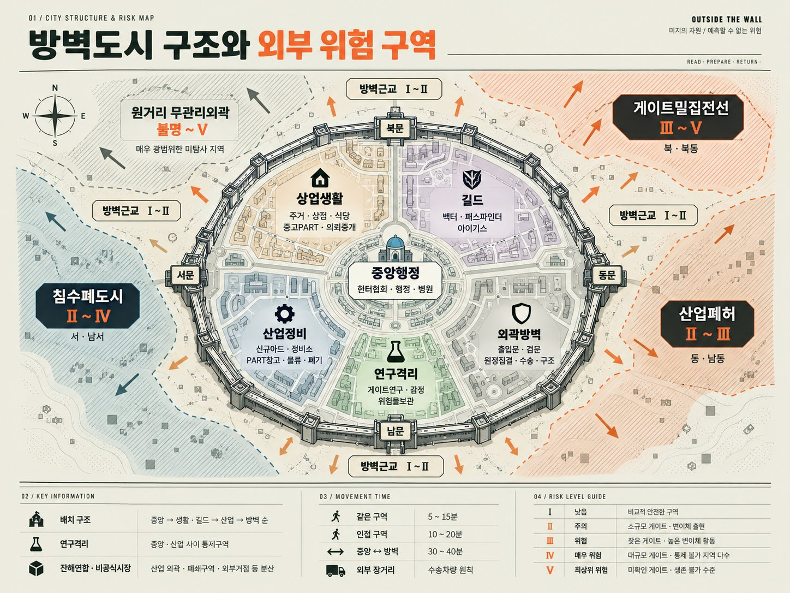

골격, 관절, 차체와 기본 외장. 버티는 힘과 움직임의 바탕입니다.
방어 / 기동방벽 내부
기체를 수리하고, 부품값을 흥정하고, 아는 얼굴과 커피를 마시는 곳. 살아갈 이유는 대개 이쪽에 있습니다.
상업 · 주거 · 산업 · 정비01 / SITUATION REPORT
공개 정보게이트가 열리고, 문명의 기반이 무너졌습니다.
인류는 방벽을 세웠고, 그 안에서 다시 살아갑니다.
방벽 안에는 상점과 주택, 공장과 일상이 있습니다. 밖에는 폐허와 외부 거점, 인간 세력, 그리고 게이트에서 유출된 기계들이 남았습니다. 게이트에서 나오는 자원은 우리를 위협하는 동시에 산업과 메카를 움직입니다.
그러니까, 전부 부숴버리는 것만이 답은 아닙니다.
기체를 수리하고, 부품값을 흥정하고, 아는 얼굴과 커피를 마시는 곳. 살아갈 이유는 대개 이쪽에 있습니다.
상업 · 주거 · 산업 · 정비끊긴 수송로와 버려진 시설. 회수할 물건도, 그 물건을 먼저 발견한 사람도 있습니다. 퇴로를 확인하세요.
탐사 · 회수 · 호위 · 구조인간을 위해 만들어지지 않은 기계 공간. 구조와 목적은 현장에서 알아내야 합니다. 익숙한 상식은 참고만 하세요.
구조 분석 · 교란 · 미확인 개체
헌터협회·행정·병원이 모인 도시의 중심입니다. 등록, 치료, 의뢰와 공식적인 지원을 가장 먼저 확인할 수 있습니다.
외부와 게이트의 위험도는 각각 Ⅰ–Ⅴ로 분류됩니다. 숫자가 높다는 건 위험과 불확실성이 크다는 뜻입니다. 보상이 크다는 보장은 아닙니다.
02 / CORE BONDING
결속 전 필독CORE는 자아를 가진
탈착식 소형 물리 AI입니다.
특수합금 외피 안에 결정형 중심핵이 있습니다. 눈도 얼굴도 없지만, 빛과 진동, 구동음과 목소리로 당신에게 반응합니다.
센서 분석, 기체 진단, 조종과 정비를 돕는 동료. 기체를 교체해도 호출명과 기억, 성향은 이어집니다. 평소 대화는 개인 채널로 전달됩니다.
CORE는 파괴될 수 있습니다. 완전히 파괴되면 자아와 기억은 복구되지 않으며, 헌터 자격도 잃습니다.
처음에는 가상의 네 자리 등록 코드로 성향을 정하고, 직접 호출명을 붙입니다.
실제로 사용하는 비밀번호나 PIN은 입력하지 마세요.
03 / MACHINE ASSEMBLY
1인승 / 약 3–6m프레임부터 무장까지, 부품을 골라 기체를 만듭니다.
첫 기체는 멋진 신품보다 상처 많은 폐품에 가깝습니다.
그래도, 움직이면 시작할 수 있습니다.
골격, 관절, 차체와 기본 외장. 버티는 힘과 움직임의 바탕입니다.
방어 / 기동엔진과 발전·구동계. 무거운 짐을 견인하고, 고부하 동작을 지탱합니다.
출력 / 기동공격과 관통, 파괴를 담당합니다. 사거리와 지형, 자신이 할 일을 생각하고 고르세요.
화력부품 기능에 따라 보조 성능과 전술적 특징이 달라집니다. 필요한 장비가 실제로 달려 있어야 사용할 수 있습니다.
보조 기능 / 전술수리는 가능합니다. 다만 새것으로 되돌아가지는 않습니다.
04 / CHOOSE YOUR AFFILIATION
6급 취득 후 선택독립 헌터로 살거나, 길드의 지원을 받을 수 있습니다.
지원에는 수익 배분과 팀의 책임이 따릅니다.
어느 쪽도 당신의 영구적인 직업은 아닙니다.
VECTOR
길이 없으면, 돌아올 길부터.
외부 탐사, 회수, 루트 개척과 원정. 현장 판단과 생환, 회수 효율을 중시합니다.
PATHFINDER
모르는 것은, 확인하고 나서.
게이트 탐사, 구조 분석과 전자전. 샘플보다 중요한 건 검증된 정보와 귀환입니다.
AEGIS
마지막 사람이 나올 때까지.
재난 대응, 방어, 구조와 철수 엄호. 팀워크와 위험 분담, 인명 보호를 우선합니다.
협회의 의뢰만이 삶의 전부는 아닙니다. 방벽 밖에는 회수꾼, 거주민, 밀수상과 무등록 헌터들이 이어진 느슨한 거래망도 있습니다. 같은 이름 아래 있다고 같은 편도, 모두 적도 아닙니다.
05 / PERSONNEL FILES
인물 기록동료도, 거래 상대도, 때로는 그 이상의 관계도.
누구나 자기 목적과 사정이 있습니다.
관계는 함께 보낸 시간과 선택으로 달라집니다.
06 / YOUR FIRST DEPARTURE
신규 등록 안내정해진 주인공도, 강제되는 메인 퀘스트도 없습니다.
탐사와 전투, 정비와 거래, 일상과 관계.
어떤 삶을 살지는 당신이 결정합니다.
가상의 네 자리 코드를 정하고, 앞으로 함께할 CORE에 이름을 붙이세요.
야드에서 부품을 직접 고릅니다. 대다수는 손상이 심한 F급 폐품. CORE의 진단을 들어보세요.
조종, 정비, 전투, 구조, 회수와 퇴각을 배웁니다. 수료하면 6급 헌터가 됩니다.
독립하거나 길드에 들어가세요. 출격 가능 범위는 헌터와 기체 등급을 모두 확인합니다.
BEFORE YOU PLAY / 이용 전 안내
행동을 자유롭게 말하세요.대사, 생각, 선택과 행동은 이용자가 정합니다. 행동의 결과는 장비와 손상, 거리와 환경, 상대의 대응에 따라 달라집니다.
세계는 당신을 기다리지 않습니다.사람들은 각자 살아가고, 사건은 시간과 함께 변합니다. 의뢰를 거절하거나 다른 목표를 세워도 됩니다.
귀환은 자동으로 보장되지 않습니다.부상과 후유증, 사망이 가능한 이야기입니다. 싸움을 피하고, 준비하고, 철수하는 판단도 중요합니다.